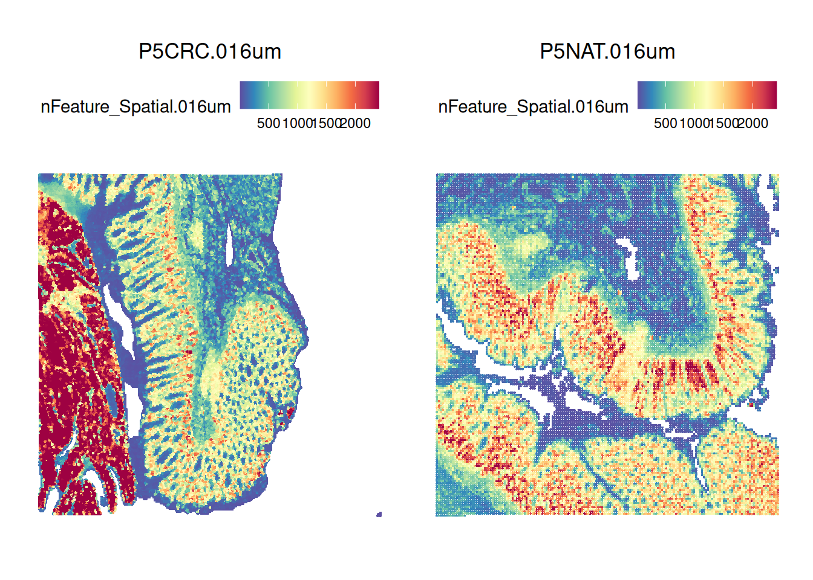
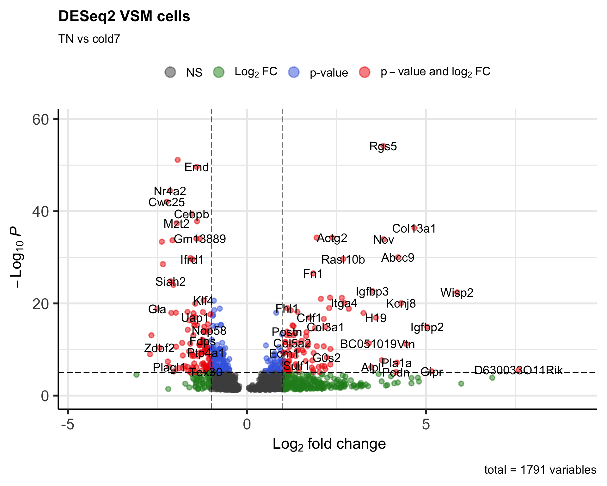
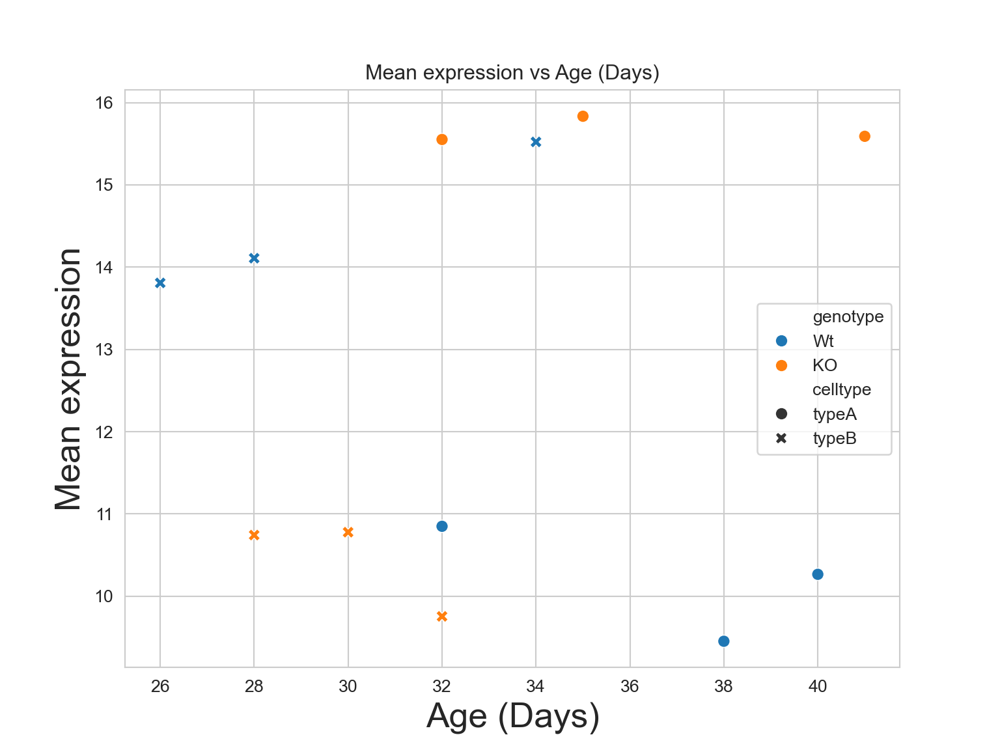
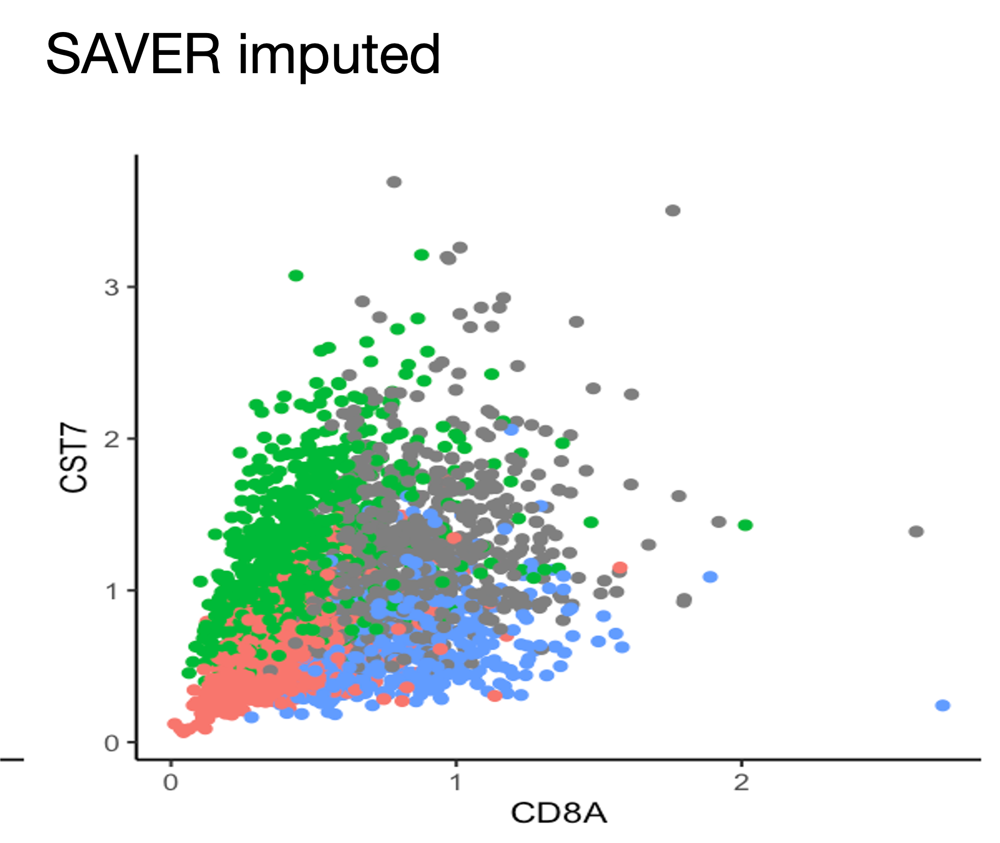
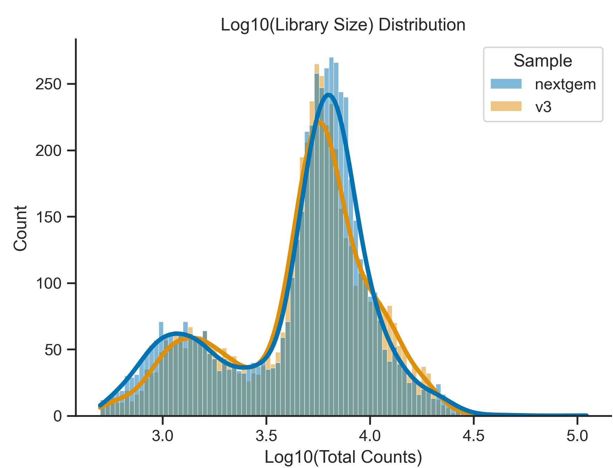
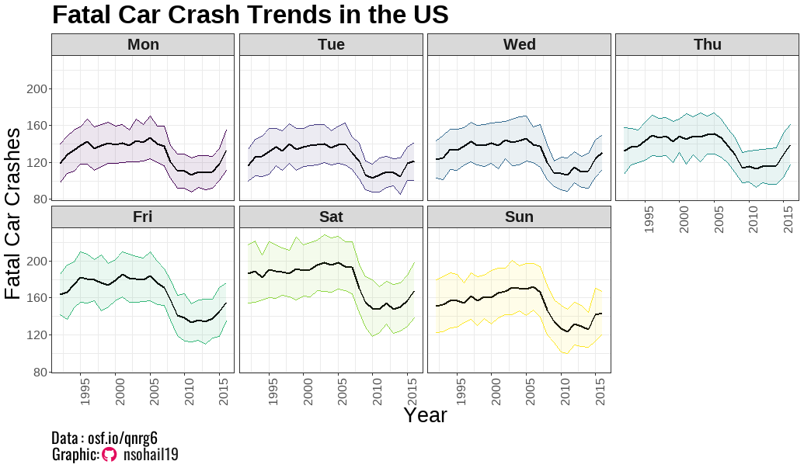

Projects & Teaching Materials
Workshops

|
Introduction to single-cell RNA-seq
Hands-on workshop covering experimental design, QC, clustering, and differential expression analysis using Seurat in R/RStudio, starting from count matrices. |
|
 |
Introduction to Spatial Transcriptomics
Hands-on introduction to spatial transcriptomics data analysis of Visium HD experiments. |
|
 |
Pseudobulk and related approaches for scRNA-seq analysis
Workshop on pseudobulk methods (from single-cell RNA-seq data) for experimental designs with biological replicates. Thus, enabling the use of DESeq2 and proportional analyses by accounting for sample-level variation. |
|
 |
Introduction to Python
Practical workshop from zero Python experience to working with real-world data. Includes topics such as: data structures, data manipulation with pandas, and visualization with Matplotlib and Seaborn. |
Workflows
|
 |
Co-expression workflow for scRNA
Calculate co-expression scores for zero-inflated single-cell datasets. |
|
 |
Template for QC of scRNA
Jupyter notebook template to run initial QC on scRNA datasets using scanpy. |
Data Visualization
|
 |
Tidy Tuesday
Weekly data visualization practice using R and ggplot2. |